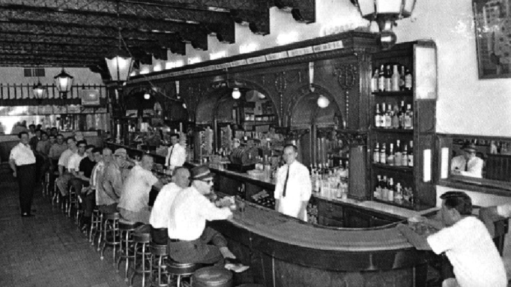
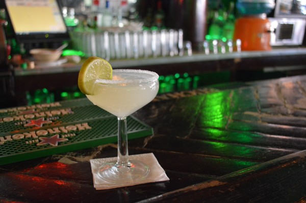

KENTUCKY
SINCE 1920
El Club Kentucky se fundó en la Avenida Juárez de Ciudad Juárez hace más de un siglo, abriendo sus puertas en octubre de 1920 bajo la propiedad de Francisco Montes. Su nacimiento coincidió con la Ley Seca en Estados Unidos, lo que impulsó la vida nocturna de Juárez, atrayendo a muchas personas de cruzar la frontera para beber
El orgullo más grande del Kentucky Bar es ser la cuna de una de las bebidas más famosas del mundo: la margarita. Su creación se remonta a 1942, cuando Don Lorenzo Hernández, barman del lugar durante más de 50 años, preparó un cóctel especial para una pareja de clientes frecuentes.
El esposo pidió una bebida que llevara los ingredientes favoritos de su esposa —tequila y limón— y que además tuviera su nombre. Así nació la margarita, una mezcla equilibrada de sabores que rápidamente se volvió un éxito entre los visitantes. Desde entonces, el cóctel se convirtió en símbolo del bar y de Ciudad Juárez. Su fama trascendió fronteras, siendo reconocido internacionalmente como un emblema mexicano.
"Las mejores margaritas de la frontera más fabulosa y bella del mundo. El lugar muy contemporáneo y todo muy ameno siempre."
— Cory C
"El lugar donde se originaron las margaritas. Obvio probé puras margaritas. La primera estuvo muy rica, el sabor exacto. El lugar en sí es agradable, un poco pequeño, pero muy buen servicio."
— jorgecabreraledezma
"Un buen lugar para disfrutar con amigos y familia, se ofrece comida y variedad de bebidas y sin duda alguna la número uno son las margaritas!!!"
— Alexandra
Dirección: Avenida Benito Juárez 629, Colonia Centro, 32000 Ciudad Juárez, Chihuahua, México.
Teléfono: (656) 632 0208
Horario: Lunes a Domingo de 11:00 am a 2:00 am